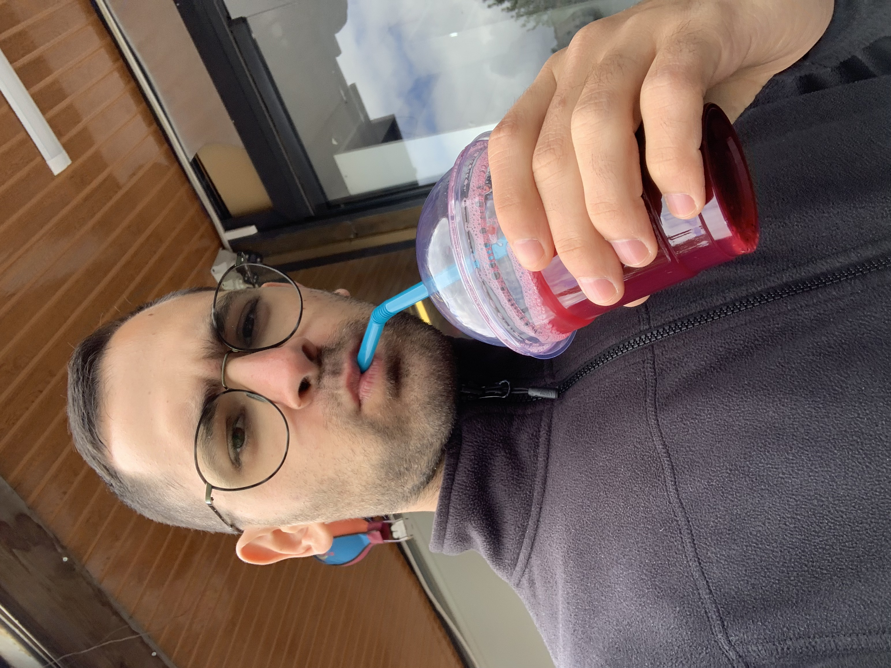

Mert Sahiner - Lebenslauf

Bildungsweg
- Grundschule - Ludwig-Weber-Schule in Frankfurt a.M.
- Realschule - Weingartenschule in Kriftel
- 2004 - 2010
- Mittlere Reife
- Fachoberschule - Konrad-Adenauer-Schule in Kriftel
- Gymnasiale Oberstufe - Main-Taunus-Schule in Hofheim a.T.
- 2011 - 2014
- Allgemeine Hochschulreife
- Duales Studium - Hessische Polizeiakademie in Wiesbaden
- 2015 - 2018
- Bachelor of Arts "Schutzpolizei"
Beruflicher Werdegang
- Uferbar Okriftel
- 07/2014 - 12/2014
- Servicekraft
- Landespolizei Hessen - Polizeipräsidium Frankfurt am Main
- Einsatzzentrale
- 1. Polizeirevier (Innenstadt)
- 07/2018 - 08/2018
- Streifendienst
- 4. Polizeirevier (Bahnhofsgebiet)
- 08/2018 - 08/2023
- Streifendienst
- Kriminalpolizei K23 (Betrug)
- 08/2023 - jetzt
- Ermittlungsdienst
Fertigkeiten
- Sprachen
- Deutsch (Muttersprache)
- Türkisch (Mutterspracke)
- Englisch (Konversationssicher)
- Spanisch (Grundkenntnisse)
- Webentwicklung (Anfänger)
Hobbys
Kontakt